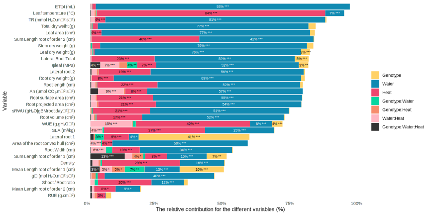

13Root architecture - Ionomics - Biomass - Water - Licor
How to associate variables with each other, taking into account my different confounding factors ?
PLSR
SEM
Linear Mixed Model (LMM)
MLMs allow all data to be used instead of averages of non-independent samples, they take account of data structure (e.g. quadrats nested within sites themselves nested within forests), they allow relationships to vary according to different grouping factors (sometimes called random effects) and they require less parameter estimation than conventional regression, saving degrees of freedom.
B. Check for independence: i. graph of residuals VS each model covariate
Code
df_iono_select$E1=E1pvar=ggplot(data=df_iono_select,aes_string(x="C_root_concentration",y="E1"))+geom_point()+geom_hline(yintercept=0, linetype="dashed", color ="red")+ylab("Normalized residuals")# Genotypepg=ggplot(data=df_iono_select,aes(x=genotype,y=E1))+geom_boxplot()+geom_hline(yintercept=0, linetype="dashed", color ="red")+ylab("Normalized residuals")# Water conditionpw=ggplot(data=df_iono_select,aes(x=water_condition,y=E1))+geom_boxplot()+geom_hline(yintercept=0, linetype="dashed", color ="red")+ylab("Normalized residuals")# Heat conditionph=ggplot(data=df_iono_select,aes(x=heat_condition,y=E1))+geom_boxplot()+geom_hline(yintercept=0, linetype="dashed", color ="red")+ylab("Normalized residuals")# results p1+pvar+pg+pw+ph
The similar range above and below zero indicates that there is no independence problem with this variable.
It is also important to check the normality of the residuals. Residuals following a normal distribution indicate that the model is unbiased.
# test=analyzePlantData(A = "Sto_WW_OT",B="Sto_WS_HS",v_var = c("DW_stem", "DW_leaf", "An","SLA")) #%>% #dplyr::select(-c(estimate,statistic,parameter,conf.low, conf.high, method, alternative))# rule for scientific valueformat_conditionnel <-function(x) {ifelse(x >1000| x >=0.0& x <=0.01, format(x, scientific =TRUE, digits =2), round(x,2))#digit and rule for scientific format}#colnames(read.csv(file = here::here("data/multi_omics/output/df_all_information_plant_num_day19.csv")))############ parameter ##############v_related_to_carbon_flow <-c("DW_leaf", "DW_stem", "DW_root","An","Tot_DW","leaf_Area") v_related_to_carbon_flow <-c("An","leaf_Area") v_related_to_water_flow <-c("ETtot","LWP","TR","sRWU","WUE","Cond") v_related_to_RSA <-c("root_Area","root_Length","root_ConvexHull", "root_Width", "root_Surface", "root_Volume","density","root_LR1","root_LR2","root_LR_tot","BC2_mean_1","BC2_mean_2","BC2_sum_1","BC2_sum_2") v_related_to_RSA <-c("root_Area","root_Surface", "root_Volume","root_Length","root_ConvexHull", "root_Width","density","BC2_mean_1","BC2_sum_1","BC2_sum_2") v_var<-c(v_related_to_carbon_flow, v_related_to_water_flow,v_related_to_RSA, "SLA", "Tleaf","S.R")v_var<-c(v_related_to_carbon_flow, v_related_to_water_flow, v_related_to_RSA, "Tleaf", "SLA")list_dataframes <-list() #to create excel########## table Stocata ###########gt_sto_resum<-analyzePlantData(A ="Sto_WW_OT",B="Sto_WS_OT",v_var = v_var) %>% dplyr::select(-c(estimate,statistic,parameter,conf.low, conf.high, method, alternative,p.value)) %>%#compilationwith other conditioninner_join(analyzePlantData(A ="Sto_WW_OT",B="Sto_WW_HS",v_var = v_var) %>% dplyr::select(-c(estimate,statistic,parameter,conf.low, conf.high, method, alternative,p.value,Sto_WW_OT_mean,Sto_WW_OT_sd)),by="variable") %>%inner_join(analyzePlantData(A ="Sto_WW_OT",B="Sto_WS_HS",v_var = v_var) %>% dplyr::select(-c(estimate,statistic,parameter,conf.low, conf.high, method, alternative,p.value,Sto_WW_OT_mean,Sto_WW_OT_sd)),by="variable") %>%mutate(type_variable =case_when( variable %in% v_related_to_carbon_flow ~"Variable related to carbon flows", variable %in% v_related_to_water_flow ~"Variable related to water flows", variable %in% v_related_to_RSA ~"Variable related to RSA",TRUE~"Other variable" )) %>%tibble() %>%mutate(type_variable =factor(type_variable)) %>%# Assurez-vous que type_variable est un facteurarrange(variable) %>%arrange(type_variable =="Other variable", type_variable) %>% dplyr::mutate(across(where(is.numeric), ~format_conditionnel(.x))) %>% dplyr::mutate(across(contains("sd"), ~paste0("±", .))) list_dataframes[["Stocata"]] <- gt_sto_resum gt_sto_resum=gt_sto_resum %>%gt(groupname_col ="type_variable") %>%tab_options(row.striping.include_table_body =TRUE ) %>%tab_style(style =list(cell_text(weight ="bold") ),locations =cells_column_labels(columns =TRUE) ) %>%tab_style(style =list(cell_text(style ="italic")),locations =cells_group(groups =TRUE) ) %>%tab_style(style =cell_text(weight ="bold", align="center"),locations =cells_body(columns =c(contains("_mean")) ) ) %>%cols_label(variable ="Variable",Sto_WW_OT_mean ="Sto_WW_OT",Sto_WW_OT_sd ="",Sto_WS_OT_mean ="Sto_WS_OT",Sto_WW_HS_mean ="Sto_WW_HS",Sto_WS_HS_mean ="Sto_WS_HS",Sto_WS_OT_sd =" ",Sto_WW_HS_sd =" ",Sto_WS_HS_sd =" ",Sto_WS_OT_Significance ="",Sto_WW_HS_Significance ="",Sto_WS_HS_Significance ="" ) %>%tab_header(title =md(paste0("Summary of physiological and structural variables for Stocata"))#,#subtitle = "Yearly measurements of Bill depth, Bill length, Body Mass and Flipper Length in each island " ) %>%tab_footnote(footnote ="For each trait, values are means ± SD. Asterisks means that the values are considered as significantly different from the values of the control condition (Welch Two Sample t-test). The stars indicate the level of statistical significance of the results as follows: *** p < 0.001, ** p < 0.01, * p < 0.05, ns not significant." ) %>%text_case_match("An"~"An (\U00B5mol CO\U2082.m\U207B\U00B2.s\U207B\U00B9)","DW_leaf"~"Leaf dry weight (g)","DW_stem"~"Stem dry weight (g)","DW_root"~"Root dry weight (g)","leaf_Area"~"Leaf area (cm²)","RUE"~"RUE (g.cm\U207B\U00B2)","Tot_DW"~"Total dry weiht (g)","BC2_mean_1"~"Mean Length root of order 1 (cm)","BC2_mean_2"~"Mean Length root of order 2 (cm)","BC2_sum_1"~"Sum Length root of order 1 (cm)","BC2_sum_2"~"Sum Length root of order 2 (cm)","density"~"Density", "root_LR1"~"LR1","root_LR3"~"LR3","root_Area"~"Root projected area (cm²)", "root_Surface"~"Root surface area (cm²)", "root_Volume"~"Root volume (cm\u00B3)","root_ConvexHull"~"Area of the root convex hull (cm²)","root_Length"~"Root length (cm)","root_LR2"~"LR2","root_LR_tot"~"LR Total","root_Width"~"Root Width (cm)","Cond"~"g\U209B (mol H\U2082O.m\U207B\U00B2.s\U207B\U00B9)","ETtot"~"ETtot (mL)","LWP"~"\u03C8<sub>leaf</sub> (MPa)","sRWU"~"sRWU (gH<sub>2</sub>O[gBM<sub>root</sub>.day\U207B\U00B9]\U207B\U00B9)","TR"~"TR (mmol H\U2082O.m\U207B\U00B2.s\U207B\U00B9)","WUE"~"WUE (g.gH\U2082O\U207B\U00B9)","Tleaf"~"Leaf temperature (°C)", "SLA"~"SLA (m²/kg)","S.R"~"Shoot / Root ratio" )gt_sto_resum
Summary of physiological and structural variables for Stocata
Variable
Sto_WW_OT
Sto_WS_OT
Sto_WW_HS
Sto_WS_HS
Variable related to carbon flows
An (µmol CO₂.m⁻².s⁻¹)
9.38
±1
4.11
±2.37
***
7.73
±2.22
ns
0.21
±3.09
**
Leaf area (cm²)
187.72
±35.4
65.14
±9.75
***
164.94
±28.29
ns
31.19
±8.06
***
Variable related to RSA
Mean Length root of order 1 (cm)
3.51
±0.69
3.43
±0.54
ns
3.26
±0.63
ns
3.13
±0.64
ns
Sum Length root of order 1 (cm)
574.97
±111.24
454.55
±36.55
*
410.44
±44.84
**
388.08
±73.56
**
Sum Length root of order 2 (cm)
590.8
±175.7
268.18
±62.7
***
278.01
±101.16
**
20.16
±10.37
***
Density
0.3
±0.04
0.25
±0.04
***
0.23
±0.05
***
0.16
±0.04
***
Root projected area (cm²)
60.71
±10.34
40.06
±5.18
***
46.63
±8.91
***
19.74
±3.16
***
Area of the root convex hull (cm²)
205.35
±34.8
165.29
±26.16
***
205.41
±37.81
ns
125.86
±30.34
***
Root length (cm)
1.3e+03
±240.9
877.14
±121
***
976.87
±175.47
***
452.54
±69.73
***
Root surface area (cm²)
203.03
±35.47
129.83
±16.96
***
154.48
±30.74
***
63.07
±10.18
***
Root volume (cm³)
960.87
±217.1
543.56
±93.07
***
713.61
±198.43
***
243.63
±50.19
***
Root Width (cm)
23.9
±3.12
22.42
±2.64
*
23.6
±3.51
ns
17.14
±4.06
***
Variable related to water flows
gₛ (mol H₂O.m⁻².s⁻¹)
0.1
±0.1
-0.01
±0.03
*
0.11
±0.1
ns
0.00
±0.02
*
ETtot (mL)
1.6e+03
±213.91
443.00
±50.34
***
1.8e+03
±161.39
***
501.00
±42.67
***
ψleaf (MPa)
-0.09
±0.12
-0.73
±0.65
ns
-0.09
±0.04
ns
-2.12
±0.39
***
sRWU (gH2O[gBMroot.day⁻¹]⁻¹)
0.74
±0.14
0.35
±0.03
***
1.03
±0.16
***
0.66
±0.11
ns
TR (mmol H₂O.m⁻².s⁻¹)
3.51
±0.44
1.00
±0.38
***
4.31
±0.61
***
1.17
±0.53
***
WUE (g.gH₂O⁻¹)
0.74
±0.1
1.03
±0.1
***
0.57
±0.06
***
0.47
±0.13
***
Other variable
SLA (m²/kg)
33.58
±2.62
30.59
±2.27
**
30.39
±3.18
**
22.84
±2.74
***
Leaf temperature (°C)
31.85
±0.57
33.14
±0.21
***
35.48
±0.8
***
37.26
±0.5
***
For each trait, values are means ± SD. Asterisks means that the values are considered as significantly different from the values of the control condition (Welch Two Sample t-test). The stars indicate the level of statistical significance of the results as follows: *** p < 0.001, ** p < 0.01, * p < 0.05, ns not significant.
Code
########## table Wendy ###########gt_wen_resum<-analyzePlantData(A ="Wen_WW_OT",B="Wen_WS_OT",v_var = v_var) %>% dplyr::select(-c(estimate,statistic,parameter,conf.low, conf.high, method, alternative,p.value)) %>%#compilationwith other conditioninner_join(analyzePlantData(A ="Wen_WW_OT",B="Wen_WW_HS",v_var = v_var) %>% dplyr::select(-c(estimate,statistic,parameter,conf.low, conf.high, method, alternative,p.value,Wen_WW_OT_mean,Wen_WW_OT_sd)),by="variable") %>%inner_join(analyzePlantData(A ="Wen_WW_OT",B="Wen_WS_HS",v_var = v_var) %>% dplyr::select(-c(estimate,statistic,parameter,conf.low, conf.high, method, alternative,p.value,Wen_WW_OT_mean,Wen_WW_OT_sd)),by="variable") %>% dplyr::mutate(type_variable =case_when( variable %in% v_related_to_carbon_flow ~"Variable related to carbon flows", variable %in% v_related_to_water_flow ~"Variable related to water flows", variable %in% v_related_to_RSA ~"Variable related to RSA",TRUE~"Other variable" )) %>%tibble() %>% dplyr::mutate(type_variable =factor(type_variable)) %>%# Assurez-vous que type_variable est un facteurarrange(variable) %>%arrange(type_variable =="Other variable", type_variable) %>% dplyr::mutate(across(where(is.numeric), ~format_conditionnel(.x))) %>% dplyr::mutate(across(contains("sd"), ~paste0("±", .))) list_dataframes[["Wendy"]] <- gt_wen_resum gt_wen_resum=gt_wen_resum %>%gt(groupname_col ="type_variable") %>%tab_options(row.striping.include_table_body =TRUE ) %>%tab_style(style =list(cell_text(weight ="bold") ),locations =cells_column_labels(columns =TRUE) ) %>%tab_style(style =list(cell_text(style ="italic")),locations =cells_group(groups =TRUE) ) %>%tab_style(style =cell_text(weight ="bold", align="center"),locations =cells_body(columns =c(contains("_mean")) ) ) %>%cols_label(variable ="Variable",Wen_WW_OT_mean ="Wen_WW_OT",Wen_WW_OT_sd ="",Wen_WS_OT_mean ="Wen_WS_OT",Wen_WW_HS_mean ="Wen_WW_HS",Wen_WS_HS_mean ="Wen_WS_HS",Wen_WS_OT_sd ="",Wen_WW_HS_sd ="",Wen_WS_HS_sd ="",Wen_WS_OT_Significance ="",Wen_WW_HS_Significance ="",Wen_WS_HS_Significance ="" ) %>%tab_header(title =md(paste0("Summary of physiological and structural variables for Wendy"))#,#subtitle = "Yearly measurements of Bill depth, Bill length, Body Mass and Flipper Length in each island " ) %>%tab_footnote(footnote ="For each trait, values are means ± SD. Asterisks means that the values are considered as significantly different from the values of the control condition (Welch Two Sample t-test). The stars indicate the level of statistical significance of the results as follows: *** p < 0.001, ** p < 0.01, * p < 0.05, ns not significant." ) %>%text_case_match("An"~"An (\U00B5mol CO\U2082.m\U207B\U00B2.s\U207B\U00B9)","DW_leaf"~"Leaf dry weight (g)","DW_stem"~"Stem dry weight (g)","DW_root"~"Root dry weight (g)","leaf_Area"~"Leaf area (cm²)","RUE"~"RUE (g.cm\U207B\U00B2)","Tot_DW"~"Total dry weiht (g)","BC2_mean_1"~"Mean Length root of order 1 (cm)","BC2_mean_2"~"Mean Length root of order 2 (cm)","BC2_sum_1"~"Sum Length root of order 1 (cm)","BC2_sum_2"~"Sum Length root of order 2 (cm)","density"~"Density", "root_LR1"~"LR1","root_LR3"~"LR3","root_Area"~"Root projected area (cm²)", "root_Surface"~"Root surface area (cm²)", "root_Volume"~"Root Volume (cm\u00B3)","root_ConvexHull"~"Area of the root convex hull (cm²)","root_Length"~"Root length (cm)","root_LR2"~"LR2","root_LR_tot"~"LR Total","root_Width"~"Root Width (cm)","Cond"~"g\U209B (mol H\U2082O.m\U207B\U00B2.s\U207B\U00B9)","ETtot"~"ETtot (mL)","LWP"~"\u03C8<sub>leaf</sub> (MPa)","sRWU"~"sRWU (gH<sub>2</sub>O[gBM<sub>root</sub>.day\U207B\U00B9]\U207B\U00B9)","TR"~"TR (mmol H\U2082O.m\U207B\U00B2.s\U207B\U00B9)","WUE"~"WUE (g.gH\U2082O\U207B\U00B9)","Tleaf"~"Leaf temperature (°C)", "SLA"~"SLA (m²/kg)","S.R"~"Shoot / Root ratio" )gt_wen_resum
Summary of physiological and structural variables for Wendy
Variable
Wen_WW_OT
Wen_WS_OT
Wen_WW_HS
Wen_WS_HS
Variable related to carbon flows
An (µmol CO₂.m⁻².s⁻¹)
7.39
±1.19
4.48
±2.06
**
9.15
±2.09
ns
-1.40
±0.77
***
Leaf area (cm²)
218.34
±54.09
75.06
±11.35
***
188.08
±49.04
ns
42.83
±8.12
***
Variable related to RSA
Mean Length root of order 1 (cm)
2.74
±0.32
2.46
±0.48
ns
3.53
±0.32
***
2.19
±0.42
**
Sum Length root of order 1 (cm)
520.53
±96.37
536.45
±147.53
ns
603.64
±59.76
*
386.77
±81.04
**
Sum Length root of order 2 (cm)
557.6
±114.83
269.80
±81.88
***
288.5
±84.3
***
30.09
±27.21
***
Density
0.28
±0.04
0.26
±0.05
ns
0.25
±0.05
*
0.18
±0.03
***
Root projected area (cm²)
58.02
±9.39
40.65
±7
***
51.33
±8.42
**
21.62
±4.25
***
Area of the root convex hull (cm²)
210.79
±29.39
157.09
±30.48
***
209.04
±23.5
ns
122.52
±24.54
***
Root length (cm)
1.3e+03
±210.77
911.48
±139.09
***
1.2e+03
±164.53
**
506.79
±81.04
***
Root surface area (cm²)
193.74
±31.62
131.81
±22.98
***
169.75
±29.4
**
69.08
±13.69
***
Root Volume (cm³)
839.44
±171.44
548.83
±123.94
***
731.41
±172.9
*
265.18
±69.83
***
Root Width (cm)
25.24
±2.22
20.41
±3.85
***
23.81
±2.22
*
15.51
±3.14
***
Variable related to water flows
gₛ (mol H₂O.m⁻².s⁻¹)
0.06
±0.07
-0.01
±0.03
*
0.11
±0.08
ns
0.02
±4.8e-03
ns
ETtot (mL)
1.6e+03
±138.26
436.71
±60.24
***
1.9e+03
±205.04
***
473.86
±74.01
***
ψleaf (MPa)
-0.07
±0.14
-0.76
±0.44
*
-0.12
±0.15
ns
-1.02
±0.58
**
sRWU (gH2O[gBMroot.day⁻¹]⁻¹)
0.77
±0.21
0.32
±0.06
***
0.98
±0.24
*
0.54
±0.09
**
TR (mmol H₂O.m⁻².s⁻¹)
3.03
±0.67
0.86
±0.23
***
4.12
±0.95
**
1.06
±0.25
***
WUE (g.gH₂O⁻¹)
0.77
±0.18
1.18
±0.23
***
0.65
±0.14
ns
0.67
±0.14
ns
Other variable
SLA (m²/kg)
33.82
±3.05
31.54
±1.18
*
29.31
±3.16
***
24.07
±2.54
***
Leaf temperature (°C)
32.63
±0.59
33.19
±0.29
ns
35.27
±0.54
***
37.11
±0.82
***
For each trait, values are means ± SD. Asterisks means that the values are considered as significantly different from the values of the control condition (Welch Two Sample t-test). The stars indicate the level of statistical significance of the results as follows: *** p < 0.001, ** p < 0.01, * p < 0.05, ns not significant.
13.4 Contribution of each factor for eatch variable
Code
v_related_to_carbon_flow <-c("DW_leaf", "DW_stem", "DW_root","An", "RUE","Tot_DW","leaf_Area") v_related_to_water_flow <-c("ETtot","LWP","TR","sRWU","WUE","Cond") v_related_to_RSA <-c("root_Area", "root_Surface","root_Volume", "root_Length","root_ConvexHull", "root_Width","density","root_LR1","root_LR2","root_LR_tot","BC2_mean_1","BC2_mean_2","BC2_sum_1","BC2_sum_2") v_var<-c(v_related_to_carbon_flow, v_related_to_water_flow,v_related_to_RSA, "SLA", "Tleaf","S.R")df_all=read.csv(file = here::here("data/multi_omics/output/df_all_information_plant_num_day19.csv")) %>%tibble() %>%select(plant_num, condition,genotype,water_condition,heat_condition, all_of(v_var)) %>%pivot_longer(cols = v_var, names_to ="variable", values_to ="value")compile_result=as.data.frame(matrix(data=NA,nrow =0, ncol =8))for (i in1:length(levels(as.factor(df_all$variable)))){ variable_l_i=as.character(levels(as.factor(df_all$variable))[i])cat( "Variable:" ,variable_l_i, "\n") df_x= df_all %>%filter(variable==variable_l_i) %>%drop_na(value) formula_string <-as.formula(paste("value", "~", paste("genotype","*","water_condition","*","heat_condition", sep ="")))# Effectuer l'ANOVA à l'aide de la fonction aov result_variable <-aov(data = df_x, formula = formula_string) anova_result=summary(result_variable)[[1]] %>%mutate(R2 =`Sum Sq`/sum(`Sum Sq`)) row_name<-rownames(anova_result) row_name <-gsub("genotype","Genotype",row_name) row_name <-gsub("water_condition","Water",row_name) row_name <-gsub("heat_condition","Heat",row_name)rownames(anova_result)<-row_name anova_result$variable=as.character(df_x$variable)[1] compile_result=rbind(compile_result,anova_result)}compile_result<-compile_result %>%as.data.frame() %>%rownames_to_column("contribution_variable") %>%mutate(Significance =case_when(`Pr(>F)`<=0.001~'***',`Pr(>F)`<0.01~'**',`Pr(>F)`<0.05~'*',`Pr(>F)`<0.1~'.',TRUE~' ' ))compile_result_modif=compile_result%>%filter(str_detect(contribution_variable, "Total", negate =TRUE)) %>%filter(str_detect(contribution_variable, "Residual", negate =TRUE)) %>%mutate(contribution_variable =str_replace_all(contribution_variable, " ", "")) %>%mutate_at(vars(contribution_variable), ~str_replace_all(., "\\$", ""))%>%mutate_at(vars(contribution_variable), ~str_replace_all(., "[0-9]", "")) %>%mutate(contribution_variable =as.character(contribution_variable)) %>%mutate(fontcolor =ifelse(contribution_variable %in%c("Water", "Genotype:Water:Heat"), "#ffffff", "#000000")) %>%mutate(contribution_variable=fct_relevel(contribution_variable,c("Genotype","Water","Heat", "Genotype:Water","Genotype:Heat","Water:Heat","Genotype:Water:Heat"))) %>%mutate(text_output=paste0(round(R2*100,0), "% ", Significance)) %>%mutate(variable=case_match(variable,"An"~"An (\U00B5mol CO\U2082.m\U207B\U00B2.s\U207B\U00B9)","DW_leaf"~"Leaf dry weight (g)","DW_stem"~"Stem dry weight (g)","DW_root"~"Root dry weight (g)","leaf_Area"~"Leaf area (cm²)","RUE"~"RUE (g.cm\U207B\U00B2)","Tot_DW"~"Total dry weiht (g)","BC2_mean_1"~"Mean Length root of order 1 (cm)","BC2_mean_2"~"Mean Length root of order 2 (cm)","BC2_sum_1"~"Sum Length root of order 1 (cm)","BC2_sum_2"~"Sum Length root of order 2 (cm)","density"~"Density", "root_LR1"~"Lateral root 1","root_LR3"~"Lateral root 3","root_Surface"~"Root surface area (cm²)", "root_Volume"~"Root volume (cm\u00B3)","root_Area"~"Root projected area (cm²)", "root_ConvexHull"~"Area of the root convex hull (cm²)","root_Length"~"Root length (cm)","root_LR2"~"Lateral root 2","root_LR_tot"~"Lateral Root Total","root_Width"~"Root Width (cm)","Cond"~"g\U209B (mol H\U2082O.m\U207B\U00B2.s\U207B\U00B9)","ETtot"~"ETtot (mL)","LWP"~"\u03C8leaf (MPa)","sRWU"~"sRWU (gH\U2082O[gBMroot.day\U207B\U00B9]\U207B\U00B9)","TR"~"TR (mmol H\U2082O.m\U207B\U00B2.s\U207B\U00B9)","WUE"~"WUE (g.gH\U2082O\U207B\U00B9)","Tleaf"~"Leaf temperature (°C)","SLA"~"SLA (m²/kg)","S.R"~"Shoot / Root ratio" )) %>% dplyr::group_by(variable) %>% dplyr::mutate(Sum=sum(R2)) %>%ungroup()plot_contrib<-ggplot(compile_result_modif, aes(x =reorder(variable,Sum), y = R2, fill = contribution_variable)) +geom_bar(stat ="identity") +geom_text(aes(label =ifelse(R2 >0.03, text_output, "")), color = compile_result_modif$fontcolor, position =position_stack(vjust =0.5), size =2.5)+scale_fill_manual(values =c("#ffd166", #geno"#118ab2", #water"#ef476f",#heat"#06d6a0", #watergeno"#f78c6b", #genoheat"#FFB6C1", # waterheat"#333333"),name ="title of legend (contribution") +#allscale_y_continuous(labels = scales::percent_format())+scale_color_identity()+labs(x ="Variable",y ="The relative contribution for the different variables (%)", ) +theme_minimal()+theme(panel.grid =element_blank(),legend.title =element_blank(), #for delete titleaxis.text.x =element_text(angle =0,hjust =1, vjust =1)#axis.title.y = element_blank() )+coord_flip(); plot_contribggsave(here::here("report/multi_omics/plot/contribution_physio_network.svg"),plot_contrib, height =6,width =12)
 ## Calcul of all comparisons with MlM
Code
calculate_critical_value <-function(p_value) {# Calculate the corresponding cumulative probability for a two-way p-value prob_cumulative <-1- p_value /2# Find the corresponding z-value in the standard normal distribution critical_value <-qnorm(prob_cumulative)return(critical_value)}
R2m (Marginal R²): This represents the variance explained by the fixed effects in your model. It is similar in interpretation to the R² value in traditional linear regression models. R2c (Conditional R²): This represents the variance explained by both the fixed and random effects in your model. It considers both fixed and random effects, providing a more comprehensive measure of goodness-of-fit for mixed-effects models. Both Rm2 and R2c can be useful in understanding the proportion of variance explained by the predictors in your model. Depending on your research question and the nature of your data, one or both of these metrics may be relevant for evaluating model fit.
Out of the 9316 possible combinations, only 2.48% were used to create the graph, representing 231 combinations. In total there were 177 variables representing node in this graph
13.6 Network plot with Igraph
Code
load(file = here::here("data/multi_omics/output/A/tmp2.RData"))# filter the data previously generatewords_to_remove <-c("sEUpE", "DW","Ba","As","Cd","Ti","Be","Fe","V","Cr","Tl")words_to_remove <-c("sEUpE")words_to_remove <-c("sEUpE_C")words_to_remove <-c("sEUpE_U")df_select=df_result_select %>%filter(select=="yes") %>%filter(between_IC01=="no") %>%filter(!str_detect(V1, paste(words_to_remove, collapse ="|"))) %>%filter(!str_detect(V2, paste(words_to_remove, collapse ="|")))#hist(df_select$slope_modif)# creation of the node nodes<-data.frame(variable =unique(c(df_select$V1,df_select$V2))) %>%mutate(id =paste0("s", 1:length(unique(c(df_select$V1,df_select$V2))))) %>%relocate(id, .before=variable) %>%#mutate(variable_type = sample(1:3, nrow(.), replace = TRUE)) %>% #generate for aleatoire colormutate(organe=case_when(grepl("leaf", variable) ~"leaf",grepl("stem", variable) ~"stem",grepl("root", variable) ~"root",grepl("sEUpE", variable) ~"sEUpE",grepl("TR", variable) ~"leaf",TRUE~"autre" )) %>%mutate(organe_num=case_when(grepl("leaf", variable) ~1,grepl("stem", variable) ~2,grepl("root", variable) ~3,grepl("sEUpE", variable) ~5,grepl("TR", variable) ~1,TRUE~4 )) %>%mutate(variable_type=case_when(grepl("concentration", variable) ~1,grepl("LWP", variable) ~2,grepl("WUE", variable) ~2,grepl("sRWU", variable) ~2,grepl("SLA", variable) ~2,grepl("S.R", variable) ~2,grepl("TR", variable) ~2,grepl("ETtot", variable) ~2,grepl("DW", variable) ~2,grepl("Cond", variable) ~2,grepl("An", variable) ~2,grepl("Height", variable) ~2,grepl("leaf_Area", variable) ~2,grepl("sEUpE", variable) ~4,TRUE~3 )) %>%mutate(variable_cleaned =ifelse(variable_type==1,gsub("[0-9_]", "", variable),variable)) %>%mutate(variable_cleaned =ifelse(variable_type==4,gsub("[0-9_]", "", variable_cleaned),variable_cleaned)) %>%mutate(variable_cleaned =gsub("[_]","",variable_cleaned)) %>%mutate(variable_cleaned =gsub("(stem|leaf|root|concentration|sEUpE)", "", variable_cleaned)) %>%mutate(nb_char =nchar(variable_cleaned)) %>%mutate(variable_cleaned =gsub("LWP", "\u03C8", variable_cleaned))# linkslinks<-df_select %>% dplyr::select(V1,V2,slope_modif) %>%inner_join(nodes %>% dplyr::rename(V1=variable) %>% dplyr::rename(X1=id),.,by="V1") %>%inner_join(nodes %>% dplyr::rename(V2=variable) %>% dplyr::rename(X2=id),.,by="V2") %>%relocate(X1, .before=X2) %>%relocate(V1, .before=V2) # Converting the data to an igraph object:net <-graph.data.frame(links, nodes, directed=T) save(nodes, links, net,file = here::here("data/multi_omics/output/A/tmp3.RData"))# Generate colors base on trend type:colrs2 <-c("#68a500", "#b8af83", "#ce7f50","black","#345995")V(net)$color <- colrs2[V(net)$organe_num]# Compute node degree (#links) and use it to set node size:deg <-degree(net, mode="all")# if(fc_or_pval=="pval"){# V(net)$size <- V(net)$log10_pval_test_t*6 #ixi modifie la taille des points# }else if(fc_or_pval=="fc"){# V(net)$size <- V(net)$abslog2fc*10 #ixi modifie la taille des points# }myrhombus <-function(coords, v =NULL, params) { vertex.color <-params("vertex", "color")if (length(vertex.color) !=1&&!is.null(v)) { vertex.color <- vertex.color[v] } vertex.size <-1/200*params("vertex", "size")if (length(vertex.size) !=1&&!is.null(v)) { vertex.size <- vertex.size[v] }symbols(x = coords[, 1], y = coords[, 2], bg = vertex.color,stars =cbind(1.2*vertex.size, vertex.size, 1.2*vertex.size, vertex.size),add =TRUE, inches =FALSE)}# clips as a circleadd_shape("rhombus", clip =shapes("circle")$clip,plot = myrhombus)## Function for plotting an elliptical nodemyellipse <-function(coords, v=NULL, params) { vertex.color <-params("vertex", "color")if (length(vertex.color) !=1&&!is.null(v)) { vertex.color <- vertex.color[v] } vertex.size <-1/30*params("vertex", "size")if (length(vertex.size) !=1&&!is.null(v)) { vertex.size <- vertex.size[v] }draw.ellipse(x=coords[,1], y=coords[,2],a = vertex.size, b=0.032, col=vertex.color)}## Register the shape with igraphadd_shape("ellipse", clip=shapes("circle")$clip,plot=myellipse)V(net)$shape<-ifelse(V(net)$variable_type==2,"rectangle",ifelse(V(net)$variable_type==3,"ellipse",ifelse(V(net)$variable_type==4,"rhombus","circle")))V(net)$size=6.5+deg*0.7#avant 10V(net)$size=ifelse(V(net)$shape=="rectangle",V(net)$nb_char*1.8+4,ifelse(V(net)$shape=="ellipse",ifelse(V(net)$nb_char>4,2+V(net)$nb_char*0.16,V(net)$nb_char*0.4),7))V(net)$size2=5# The labels are currently node IDs.# Setting them to NA will render no labels:colrs1 <-c("black", "white", "black","white")V(net)$label.color <-colrs1[ifelse(V(net)$organe=="autre",2,V(net)$variable_type)] #color of the labelV(net)$label.dist <-0#.7 #distance from the center of the vertexV(net)$label.family="sans"#type de policeV(net)$label.font=V(net)$variable_type # 2 for bolt 1 is plaint texte 3 for italic#V(net)$label <- NA# Set edge width based on weight:#E(net)$width <- -log10(1-abs(E(net)$slope_modif))*1.5# avt /6E(net)$width <- (abs(E(net)$slope_modif))*2# avt /6#change arrow size and edge color:E(net)$arrow.size <- .2E(net)$edge.color <-"gray80"# Let's color the edges of the graph based on their source node color.# We'll get the starting node for each edge with "get.edges"edge.start <-get.edges(net, 1:ecount(net))[,1]edge.col <-V(net)$color[edge.start]vec_color=ifelse(E(net)$slope_modif>0,"red","blue")edge.col <-vec_color #mettre red if is upper green if is lower 0l=layout_in_circlel=layout_with_kk # Kamada Kawai #Like Fruchterman Reingold, it attempts to minimize the energy in a spring system.l=layout_on_gridl=layout_with_fr #Fruchterman-Reingold# exportsvg(width=10, height=10,filename = here::here("report/multi_omics/plot/iono_ra_physio/network_all.svg"))set.seed(1)plot(net, layout=l, edge.lty=1,edge.arrow.size=0,vertex.label=V(net)$variable_cleaned,vertex.label.cex =0.8,edge.color=edge.col,edge.curved=.15)title(main ="Network plot based on MLM results show correlation between variables")mtext(paste0("Positive correlation: ",length(df_select %>%filter(slope_modif>0) %>%pull(slope_modif))),side =1, line =2, cex =0.8,col ="red")mtext(paste0("Negative correlation: ",length(df_select %>%filter(slope_modif<0) %>%pull(slope_modif))),side =1, line =1, cex =0.8,col ="blue")dev.off()## Degree Distribution Histogramdf_deg=tibble(nodes=names(deg),deg=as.vector(deg)) %>%full_join(nodes %>%as.data.frame() %>% dplyr::rename(nodes=id),.,by="nodes") %>%arrange(desc(deg)) %>%mutate(variable_cleaned =ifelse(variable_type==1|variable_type==4,gsub("[0-9_]", "", variable),variable)) %>%mutate(variable_cleaned =gsub("[_]","",variable_cleaned)) %>%mutate(variable_cleaned =gsub("(concentration)", "", variable_cleaned)) %>%mutate(variable_cleaned =gsub("(stem)", "", variable_cleaned)) %>%mutate(variable_cleaned =gsub("(root)", " ", variable_cleaned)) %>%mutate(variable_cleaned =gsub("(leaf)", " ", variable_cleaned)) %>%mutate(organe=factor(organe, levels =c("leaf", "stem", "root","autre", "sEUpE"))) %>%mutate(variable_cleaned =gsub("sEUpE", "sEUE ", variable_cleaned))#mutate(variable_cleaned = gsub("(stem|leaf|root|concentration)", "", variable_cleaned))px=df_deg %>%filter(deg >3) %>%ggplot(aes(x = deg, y =reorder(variable_cleaned, -deg), fill = organe, label = deg)) +geom_col(position ='dodge') +geom_text(hjust =-0.4) +scale_fill_manual(values = colrs2, breaks =c("leaf","stem","root", "autre", "sEUpE")) +#scale_x_continuous(limits = c(0, 15),breaks = seq(0, 15, by = 1))+theme_minimal() +theme(axis.title.y =element_blank(),axis.text.x =element_blank(),axis.ticks.y =element_blank(),panel.grid =element_blank(),legend.position ="none")+labs(x="Degree", fill="Organe")ggsave(here::here("report/multi_omics/plot/iono_ra_physio/degree_all.svg"), px, height =8.5,width =6)
#help in this site https://christophergandrud.github.io/networkD3/load(file = here::here("data/multi_omics/output/A/tmp3.RData"))net <-graph.data.frame(links %>%mutate(X1=V1) %>%mutate(X2=V2), nodes %>%mutate(id=variable), directed=T) #convert seed and note to be redable# deg.dist <- degree_distribution(net, cumulative=T, mode="all")# plot( x=0:max(degree(net)), y=1-deg.dist, pch=19, cex=1.2, col="orange", # xlab="Degree", ylab="Cumulative Frequency")# Use igraph to make the graph and find membershipwc2 <-cluster_walktrap(net)# members <- membership(wc)members2 <-membership(wc2)# Convert to object suitable for networkD3karate_d3 <-igraph_to_networkD3(net, group = members2)# Create force directed network plotforceNetwork(Links = karate_d3$links, Nodes = karate_d3$nodes, Source ='source', Target ='target', NodeID ='name', Group ='group',opacity =0.85,fontSize =15,fontFamily ="arial",charge =-18,zoom = T,legend = F)
Code
# connect with who ? df_select %>%filter(V1=="ETtot"|V2=="ETtot")
{kind=link}
{kind=link}
{kind=link}
{kind=link}
{kind=link}
{kind=link}